Bitso Business Dashboard
Bitso Business, the unit serving enterprise clients with cross-border payments, FX operations, and treasury management inside Bitso, was running on a web interface mirrored from the retail consumer wallet. Business users moving millions monthly were navigating memecoins, missing basic tracking tools, and operating without multi-account support. Churn was high, onboarding was slow, and the platform was actively working against retention.
I led the design strategy to change that by defining the end-to-end vision for a new, purpose-built business platform: new information architecture, new navigation, new homepage with real-time operational tracking, multi-account payments, and a full web design system co-created from zero using AI and open-source. I set the direction, established the visual and structural foundations, and guided a team of designers through execution across every surface.
Timeframe: 6 months
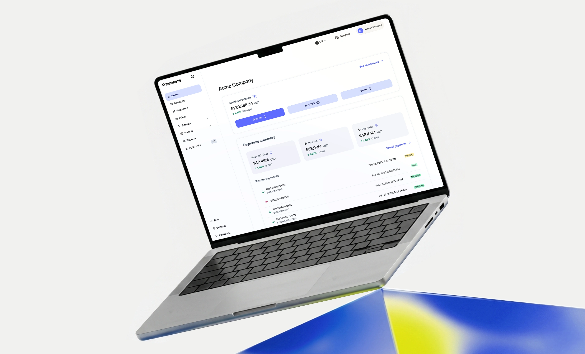
About Bitso Business
Bitso is the leading crypto-financial platform in Latin America. Bitso Business is its B2B arm, a platform that enables companies to perform cross-border payments, FX operations, OTC trading, and treasury management using stablecoins (USDT, USDC) as rails across currencies like MXN, USD, BRL, ARS, COP, and EUR.
Clients range from payment aggregators and remittance companies to fintechs and large enterprises operating across LATAM, the U.S., and Europe.
Scenario
Business clients were using an interface designed for retail crypto users: memecoins on the homepage, no operational data, no business-specific workflows. The gap between what the platform offered and what enterprise clients needed was widening.
Data confirmed it: customers using APIs had a revenue churn of just 0.67%, while non-API users sat at 6.58%. The platform experience was a key lever for retention and it was failing.
Retail-oriented UI
The homepage was dominated by crypto tokens and altcoins irrelevant to business users. No visibility into balances, transaction statuses, or SEPA/SWIFT operations at a glance.
Manual, disconnected workflows
OTC trading was fully manual. SEPA/SWIFT required back-and-forth coordination. CSV exports lacked fee integration and custom date ranges.
No business-specific features
Lack of reporting tools, reconciliation exports, fee transparency, and treasury management dashboards. Multi-user and multi-account structures were non-existent.
High churn, long onboarding
Time to Onboarding averaged 23 days. Time to Revenue for Enterprise/Pro was ~96 days. Starter accounts had 25% net revenue churn. The platform wasn't helping retain clients.
Expected achievements
Reduce churn by giving business users a purpose-built interface that addresses their operational needs and makes daily tasks effortless.
Provide essential tools such as dashboards, reporting and transaction visibility which makes the platform a daily operational hub.
Make it easy for clients to discover SEPA, SWIFT, OTC, and treasury tools through contextual product awareness.
Give clear visibility into fees, volumes, transaction statuses, and account limits through actionable dashboards and analytics.
Support enterprise structures with parent/sub-accounts, role-based permissions and cross-account visibility.
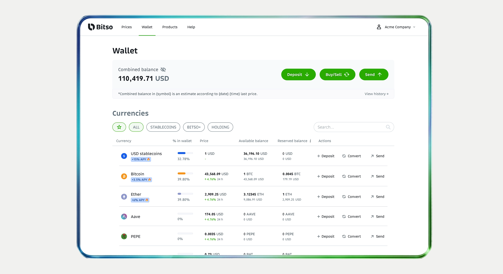
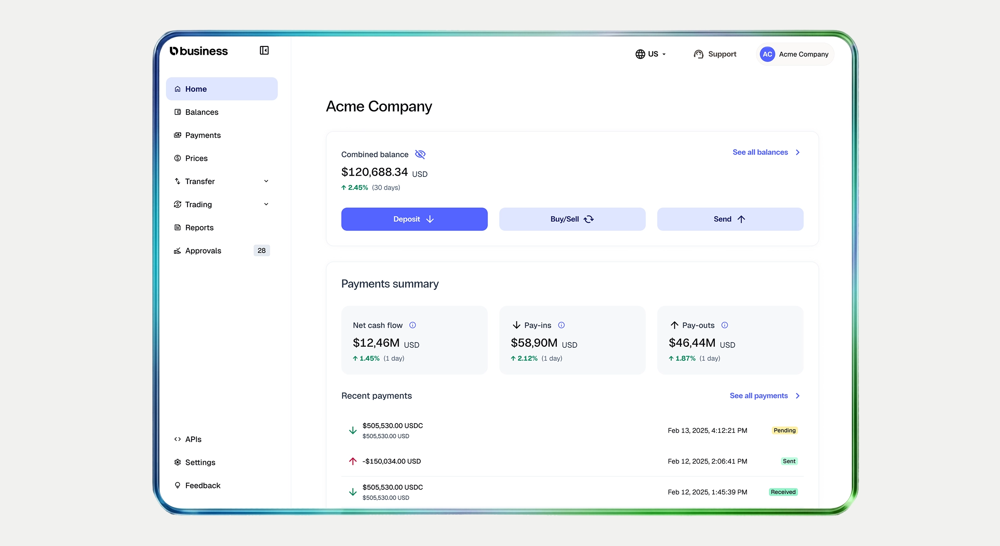
Role
I led the design strategy defining the vision, structure, and visual direction for the entire initiative, then guiding a team of designers through execution.
I worked alongside a Product Director (Alexandre Santos Spengler), an Associated Product Manager (Diego M. Gutierrez Cordova), and closely with Key Account Managers who provided continuous client context.
I directed the design work of Michael Carvalho Pinto Da Cunha, who was responsible for screen-level execution under my guidance.
- Defined the end-to-end design strategy: information architecture, navigation, visual direction, and design principles for the entire platform
- Co-created the web Design System from zero using AI tools and open-source, establishing tokens, components, and governance
- Supervised UI execution across all key surfaces (homepage, payments, reporting, trading), guiding designers through screen-level delivery
- Led user research with enterprise clients and collaborated on competitive benchmarking, translating insights into design requirements
- Shaped cross-functional decisions: migration strategy, Figma workspace structure, and phased rollout planning
Process
Discovery & Research: We combined internal stakeholder interviews with external client research, organizing conversations around six themes (usage pain points, reporting, navigation, trading, multi-account, and cross-selling).
We layered in existing data from previous researches and competitive benchmarking. Four key findings emerged:
- business clients don't hold altcoins and found the retail UI confusing;
- reporting was critical but broken;
- multi-user was a genuine blocker;
- and operational visibility (fees, volumes, statuses) was nearly nonexistent.
Design System & UI/UX: We used open-source component libraries as our structural base (accessibility, responsiveness, and interaction patterns out of the box), AI tools to rapidly generate component variations, token definitions, and documentation (compressing days of manual work into hours), and Bitso's new brand identity as a theming layer on top, ensuring visual consistency without rebuilding interaction logic.
Validation & Launch: We ran feedback sessions both internally with our Account Managers and with top clients, iterated on wireframes, and launched in early 2026 for a small group of our most active users. Monthly feature drops kept the platform evolving post-launch.
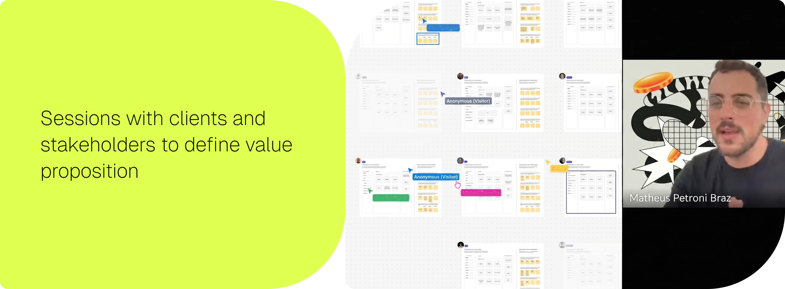
Deliverables
The revamp shipped five core deliverables that collectively transformed the platform from a retail mirror into a purpose-built business tool:
New navigation structure: A completely redesigned information architecture organized around business workflows, replacing the retail-oriented menu with a model that prioritizes operational tasks like payments, reporting, and trading.
Homepage with real-time business tracking: A new homepage built as a financial operations center: real-time balances per currency, transaction statuses, volume and fee metrics, failed transfer alerts, and contextual cross-sell cards.
Payments page with multi-account control: A dedicated pay-ins and payouts view designed for both account holders and their associated accounts, with status tracking, fee breakdowns, filters, and export capabilities.
Account switcher: A persistent control that lets users move between linked accounts without losing context, essential for enterprise clients managing multiple subsidiaries or regional operations from a single login.
Full web design system: A complete, documented component library built from zero using AI and open-source foundations, covering tokens, components, patterns, and page templates.
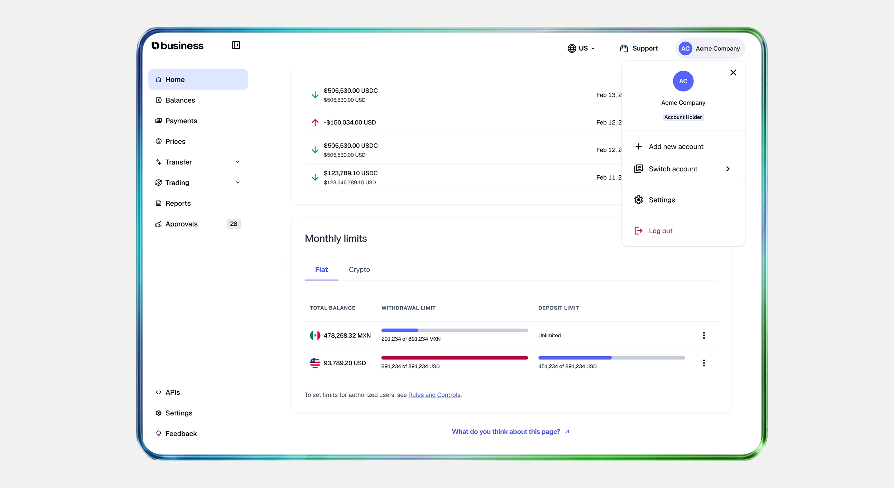
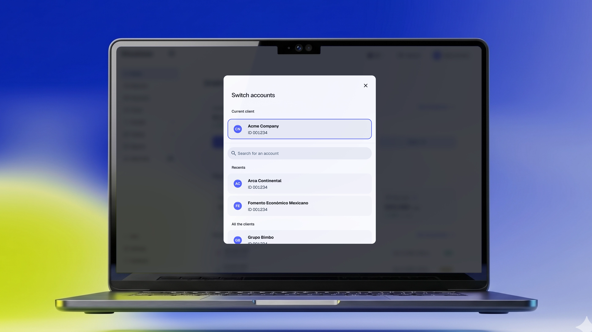
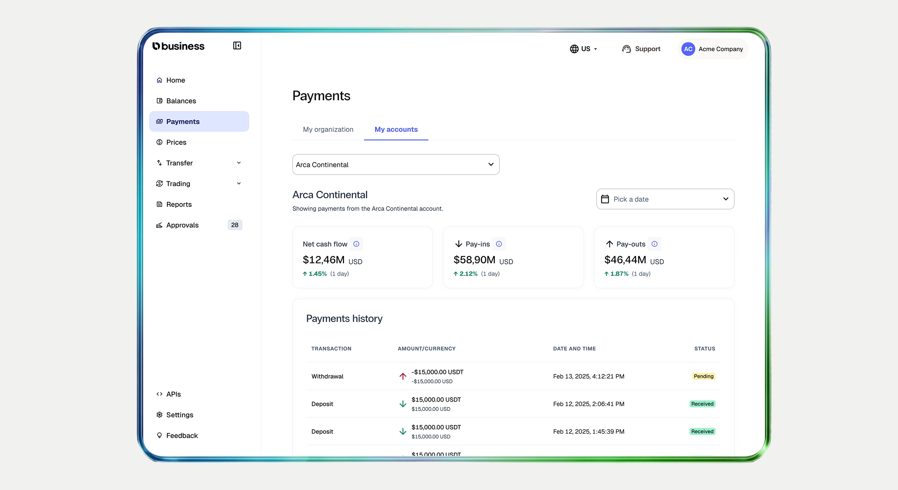
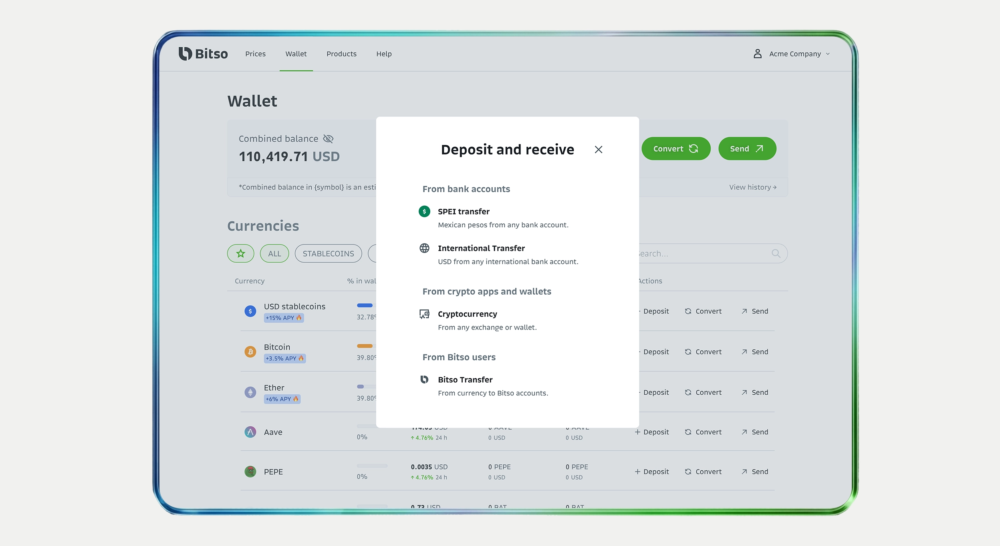
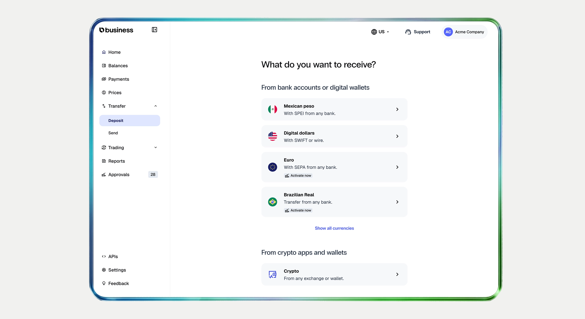
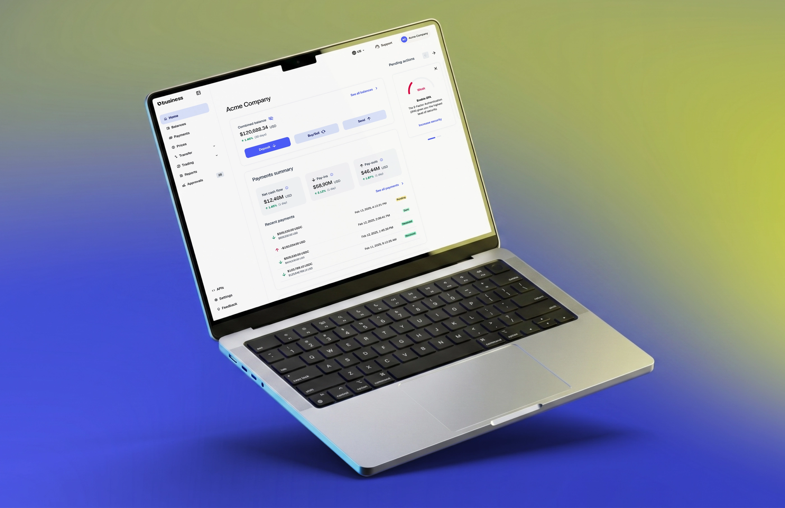
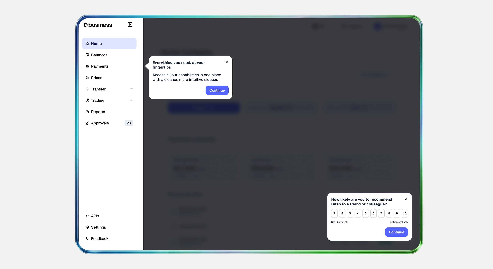
Results and learnings
The new platform launched in January 2026 and has been live for three months at the time of this analysis. While it's still early, the initial signals are strong.
Drastic reduction in support tickets: Three of the most common ticket categories (monthly limits inquiries, account switching issues and report generation requests) saw a sharp decrease after launch. The new interface surfaces this information directly in the dashboard: limits are visible in real-time, the account switcher and better information architecture eliminated confusion around multi-account navigation, and self-service reporting access replaced the need to request exports through support. Information that previously required contacting an Account Manager or opening a ticket is now accessible in the daily workflow.
Increase in monthly active users: Platform MAU grew 8% as the redesigned experience gave clients a reason to log in regularly. Instead of relying on Account Managers or support channels for operational data, users now find balances, transaction statuses, and performance metrics directly in the platform, shifting it from an occasional portal to a daily operational tool.
Paving the way for what's next: Beyond the immediate impact, the new platform created the foundation for key upcoming launches: new ramp flows for pay-ins and payouts that will simplify how clients move money in and out, and better visibility into available products and ramps. The platform now organizes and surfaces the next best actions for each client, making it easier to discover and activate services that can improve their operations.
Teams: Matheus Petroni (Product Design Lead), Michael Carvalho (Mid-Product Designer), Diego Gutierrez (Associate Product Manager), Jen Tejeda (Product Manager), Guillermo Puntons (Tech Lead), Matías Moreno (Frontend), Victor Paramo (Frontend).